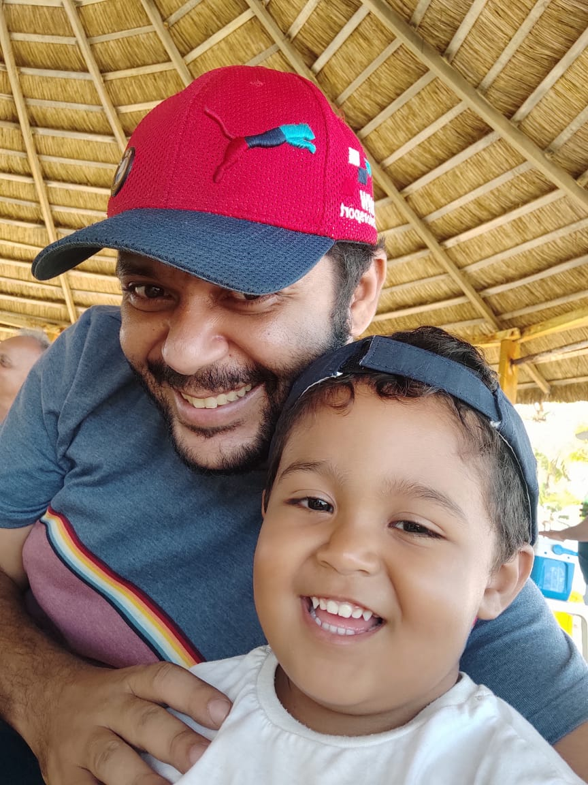

Página Inicial
Projetos
Sobre

Fabiano Cunha Lopes
Sou Fabiano, tenho 37 anos, nascido em Peçanha-MG, tenho 2 filhos de 3 anos, 2 dogs vira-latas.
Moro em Sergipe a 30 anos, estudante de FullStack pela
Labenu
, e estudante de,
Análise e desenvolvimento de sistemas pela Uninassau